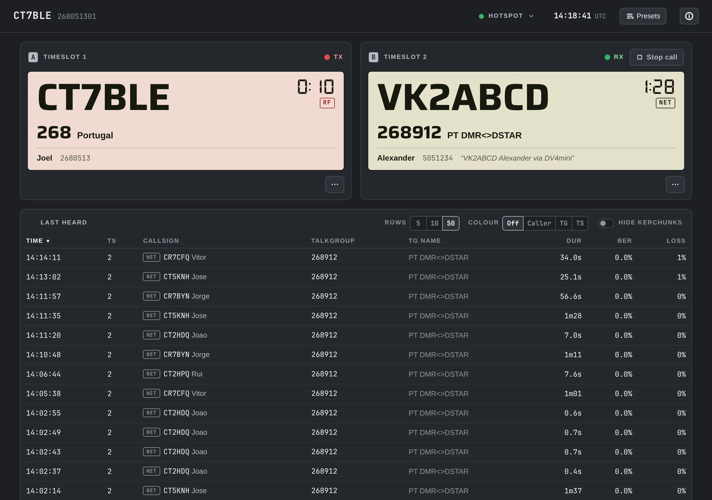
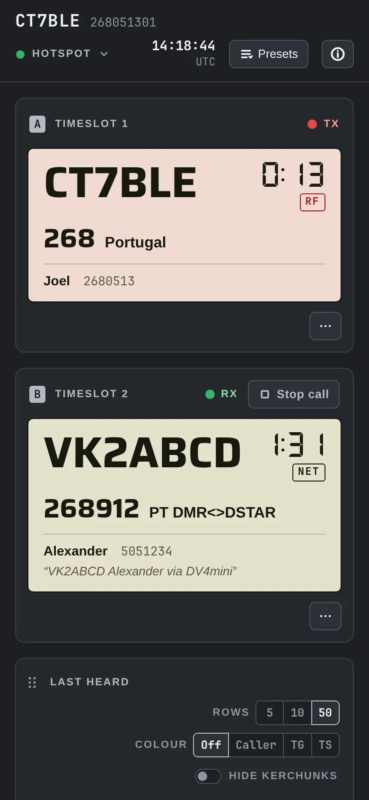

Un hotspot DMR que configuras y te olvidas.
Rellena un asistente en tu ordenador, enchufa la Pi y se configura sola con DMRHost de BrandMeister y un panel. Sin Linux y sin archivos de configuración.
- Gratis y de código abierto
- Windows, macOS, Linux
- En el aire de 5 a 15 minutos después de encenderlo
Tres pasos, lo que dura un café.
-
Formatea la tarjeta y graba Raspberry Pi OS
Mete una tarjeta SD en tu ordenador y abre el programa gratuito Raspberry Pi Imager. Elige Raspberry Pi OS Lite (64-bit) y luego pulsa Skip customisation: no pongas ahí nombre, usuario ni wifi, porque de eso se encarga el asistente. Imager formatea la tarjeta mientras la graba.
-
Ejecuta el asistente en el mismo ordenador
Cuando Imager termine, abre el asistente con la tarjeta todavía en el ordenador. Si Imager la ha expulsado, sácala y vuelve a meterla. Introduce tu indicativo, la wifi, el hat y las frecuencias, y el asistente configura DMRHost en la tarjeta. Tú decides si instalar el panel dmrdash.
-
Enchufa la Pi y ve a prepararte un café
El primer arranque tarda de 5 a 15 minutos. No hace falta que lo vigiles, pero esto es lo que hace:
- OKInstala BrandMeister DMRHost
- OKConfigura tu hat, las frecuencias y la pantalla OLED
- OKInstala el panel dmrdash, si lo elegiste
- OKBorra tus contraseñas de la tarjeta
- EN EL AIRESe enciende la pantalla OLED. Ya estás en BrandMeister.
Mira quién habla y cambia de talkgroup desde el móvil.
Cuando esté en marcha, abre http://<nombre del hotspot>.local:8080 en cualquier móvil u ordenador de tu red.

- Luz de estado. Una sola luz para el software del hotspot, la placa de radio y el enlace con BrandMeister. Verde es buena señal. Tócala para ver los detalles y los controles.
- Quién habla. El recuadro se pone rojo cuando transmites, y color crema cuando es otra persona.
- Dónde. Ves el talkgroup y su nombre, con el nombre de quien habla debajo.
- Cortar llamada. Corta una conversación que no quieras oír en tu hotspot.
- Tus talkgroups. Elige los que quieres oír siempre en cada timeslot. La clave API que añadiste en el asistente te permite cambiarlos sin entrar en BrandMeister.
- Últimos escuchados. Ve a todos los que han salido al aire hace poco, con enlaces para buscarlos en QRZ.com.

- Pensado para el móvil: se lee bien con el brazo estirado mientras sujetas la radio con la otra mano.
- Preajustes: guarda conjuntos como «Diario» o «Noche de rueda» y cambia entre ellos con un toque. Solo se cambia lo que es distinto.
- Estáticos programados: haz que el talkgroup de tu rueda semanal se active solo cuando hay rueda, indicando la hora local.
- Ayuda con la recepción: si el audio se entrecorta, te sugiere un offset de RX mejor y lo ajusta mientras transmites; luego te pregunta antes de quedárselo.
- Avisos claros: aparece un aviso rojo cuando algo va mal, y no molesta cuando todo va bien.
Tu lista de la compra para el hotspot
¿Ya tienes un hotspot? Tu Pi y tu hat MMDVM_HS sirven tal cual.
Una Raspberry Pi
Te hará falta una Zero 2 W, 3 o 4. La Zero 2 W es pequeña, barata y basta para la mayoría de hotspots. La Pi 5 todavía no está soportada.
Un hat MMDVM_HS
Esta pequeña placa de radio se pincha en los pines de la Pi. Puedes elegir símplex (una frecuencia) o dúplex (dos). Una pantalla OLED es un extra útil.
Una tarjeta SD de 8 GB o más
También necesitas una forma de conectarla a tu ordenador.
Una cuenta de BrandMeister
Primero pon una contraseña de seguridad del hotspot en SelfCare. Es distinta de tu contraseña de acceso, y el asistente te enseña dónde encontrarla. También necesitarás una clave API de SelfCare para gestionar los talkgroups desde el panel.
Una radio DMR y un ID DMR
Tu ID te lo da radioid.net. Basta con escribir tu indicativo en el asistente y él te busca el ID.
Tu licencia de radioaficionado
Un hotspot es un transmisor. Elige frecuencias que permitan tu licencia y el plan de bandas local.
Un pequeño repetidor personal en tu mesa.
¿No tienes ningún repetidor a tiro? Un hotspot escucha tu radio a unos pocos metros por UHF y lleva tu voz a BrandMeister por internet. Otros radioaficionados de todo el mundo te oyen en el mismo talkgroup.
- Tu radioUn portátil o una emisora móvil DMR
- HotspotRaspberry Pi + hat MMDVM_HS. Es lo que configuramos.
- BrandMeisterLa red DMR mundial
- Todos los demásEn hotspots y repetidores de todo el mundo
Añade un canal con los números del asistente.
La frecuencia de recepción del hotspot es la de transmisión de tu radio, y al revés. El asistente muestra las dos desde el punto de vista de tu radio, así que puedes copiarlas tal cual en tu codeplug.
- TX DE TU RADIO
- 432.0000
- RX DE TU RADIO
- 434.0000
- CÓDIGO DE COLOR
- 1
- SLOTS
- TS1 + TS2
El DMR explicado en cinco términos
- Talkgroup (TG)
- Un canal compartido en la red. El TG 91 es mundial, y la mayoría de países tienen el suyo.
- Timeslot (TS1, TS2)
- El DMR mete dos conversaciones en una sola frecuencia. Un hat símplex solo usa el TS2.
- Colour code (CC)
- Funciona como un tono CTCSS, pero para DMR. La radio y el hotspot tienen que coincidir; con 1 vale.
- Talkgroup estático
- Este canal está siempre activo, así que lo oyes sin pulsar el PTT. El panel los configura por ti.
- Talkgroup dinámico
- Se activa cuando pulsas el PTT y se desactiva solo cuando el canal se queda en silencio.
¿Solo usas DMR en BrandMeister? Usa el software de host del propio BrandMeister.
Aprovecha tu Pi y tu hat MMDVM_HS de siempre. Esta tarjeta lleva DMRHost, el software de hotspot hecho por BrandMeister, y gestiona tus talkgroups sin abrir SelfCare.
| UNA IMAGEN MULTIMODO | ESTA TARJETA | |
|---|---|---|
| Configuración | Primero arrancas, luego buscas la Pi y la configuras en su página web | Primero respondes a un asistente en tu ordenador; la Pi arranca ya configurada del todo |
| Software de host | MMDVMHost y pasarelas para muchos modos | BrandMeister DMRHost, directamente del repositorio apt de BrandMeister |
| Talkgroups | Entrar en SelfCare para cambiar los estáticos | Añade estáticos, estáticos programados y preajustes desde el propio panel |
| Panel | Estado y últimos escuchados | Los dos timeslots, estado del enlace, evolución del BER y un ajustador del offset de RX |
| Alcance | Muchos modos y redes | DMR en BrandMeister, y absolutamente nada más. |
Copia cinco números y luego cambia de tarjeta.
Empieza con una tarjeta SD nueva y guarda bien la actual. Copia estos datos de tu hotspot actual en el asistente. El codeplug de tu radio se queda exactamente igual.
- Graba Raspberry Pi OS Lite (64-bit) en la tarjeta nueva
- Ejecuta el asistente y escribe tus números
- Cambia las tarjetas y enciende. Dale de 5 a 15 minutos.
- Frecuencia RX___.____ MHz
- Frecuencia TX___.____ MHz
- Offset de RX____ Hz
- Colour code__
- Master de BrandMeister____
El asistente encuentra tu ID DMR a partir de tu indicativo. También necesitarás la contraseña del hotspot de BrandMeister y una clave API de SelfCare para gestionar los talkgroups.
- Usas solo DMR, y únicamente en BrandMeister
- Cambias de talkgroup a menudo, sobre todo antes de las ruedas
- Quieres un panel que se lea bien en el móvil
- Prefieres configurarlo todo una sola vez en tu ordenador
- Usas D-Star, YSF, P25, NXDN o M17
- Te conectas a TGIF, FreeDMR u otras redes DMR
- Tu hotspot es una Pi 5, que todavía no soportamos
- Necesitas software probado, porque este proyecto aún está en sus inicios
Pruébalo antes en una tarjeta de repuesto: la actual se queda tal cual, así que puedes volver a ella cuando quieras. WPSD y Pi-Star son proyectos independientes y no tienen relación con este.
Descarga el instalador
Ejecuta el instalador en el ordenador que uses para grabar la tarjeta SD. El asistente se abrirá en tu navegador.
Windows Tu sistema
Descargar .exeEl archivo todavía no está firmado, así que Windows te mostrará un aviso. Elige Más información y luego Ejecutar de todas formas.
macOS, Apple silicon Tu sistema
DescargarEn Terminal, dentro de tu carpeta de descargas:
xattr -d com.apple.quarantine dmrhost-installer-macos-arm64
chmod +x dmrhost-installer-macos-arm64
./dmrhost-installer-macos-arm64¿Prefieres Python? Con Python 3.9 o posterior, clona el repositorio y ejecuta python3 wizard.py. Añade --cli para responder a las preguntas en el terminal.
Preguntas frecuentes
¿Tengo que saber Linux?
No, nunca tendrás que abrir un terminal en la Pi. Si te gusta usar SSH, está disponible con tu clave SSH o tu contraseña.
¿Y si me equivoco al escribir algo?
Vuelve a grabar la tarjeta con Imager y ejecuta otra vez el asistente. Los talkgroups y el offset de RX siempre los puedes cambiar más tarde desde el panel.
No ha pasado nada después de 15 minutos
Suele ser un problema de wifi. Revisa el nombre de la red y la contraseña, o conecta un cable Ethernet en una Pi 3 o 4. La instalación lo vuelve a intentar cada minuto, incluso entre reinicios, así que seguirá sola en cuanto tenga conexión.
El panel muestra un aviso rojo
Significa que el enlace con BrandMeister está caído. Revisa la contraseña de seguridad del hotspot que pusiste en SelfCare, que es distinta de tu contraseña de acceso a BrandMeister.
Oigo a los demás, pero ellos no me oyen
Comprueba que la frecuencia TX de tu radio coincide con la frecuencia RX del hotspot, y que los colour codes son iguales. Si el audio se entrecorta, prueba el ajustador del offset de RX del panel.
¿Puedo prestar la tarjeta SD sin riesgo?
No la prestes antes del primer arranque. Hasta entonces, la tarjeta guarda en texto plano tus contraseñas del hotspot, de la wifi y de acceso. El primer arranque las pasa a archivos seguros y las borra de la tarjeta.
¿Cuesta algo?
No, es gratis y de código abierto, con licencia MIT. DMRHost es el software de BrandMeister, y dmrdash es el panel.
¿Está terminado el proyecto?
Está en sus inicios. Los ajustes que escribe coinciden con los de un hotspot que funciona, pero el proceso completo, de la tarjeta al primer arranque, todavía no se ha probado en hardware real. Los informes siempre son bienvenidos en GitHub.
¿Listo para tu primer QSO?